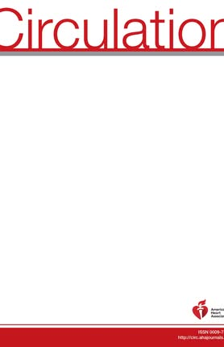

(no text — see the shared post below)

AHA now formally recommends resistance training to prevent heart disease
Louis highlights the American Heart Association's 2023 scientific statement updating its 2007 one on resistance training. It concludes resistance training, alone or with aerobic exercise, is safe and effective for improving cardiovascular health and risk factors in adults with and without cardiovascular disease.